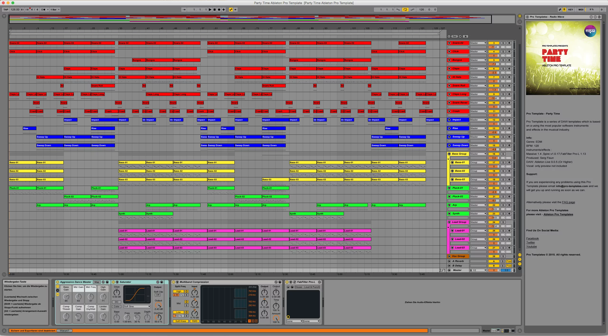
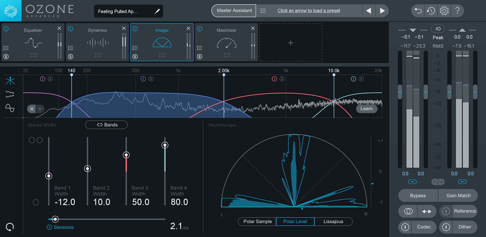

Behind the Scenes of the Magic
The bread and butter of dubstep production starts at the Digital Audio Workstation (DAW). Click here to head to musicianonamission.com to see some of the best available DAW's on the market. Essentially, the DAW gives the user an interface for them to use other software plugins on (such as a synthesizer), as well as allow the user to arrange everything in the way they wants to. The DAW has basic features such as the ability to record, to create wav or mp3 files (the typical file types for audio), and many more. Most DAW's come pre-installed with a decent amount of plugins to use, such as EQ's and compressors (both critical pieces of technology used in the audio world). A lot of the times, however, dubstep producers like to use 3rd party software plugins, as some of the pre-installed features are not the most powerful. One of, if not, THE most used 3rd party plugins dubstep producers will use is called Massive by Native Instruments. It is a very powerful synthesizer capable of giving the user tons of freedom to make whatever sound they can. Live bands also use DAW's to record their songs using live instruments and albums so without DAW's, there would not be very much good music in the world!

Ableton is one of the most powerful and well known DAW's on the market. Image Source: logictemplates.com
As talked about before, the user has the ability to use plugins with their DAW. These plugins can be anything from a synthesizer, to a compressor, to even something that just shows how the actual sound waves are moving around. Every artist has their own personal preference of what is the best plugins to use, and some may even say you don't need any 3rd party plugins, just the pre-installed ones. It's all a matter of taste so it's hard to say what exactly are the best plugins out there or what are the plugins the user should definitely be using. Either way, these are essential in dubstep production as the ability to create sound would not exist without them.

Ozone's Imager gives an inside look at the different frequencies being produced and allows the user to actually change the frequencies in various ways. Image Source: ozone.com
One of the coolest things about dubstep, and EDM production in general, is the ability to really experiment with the sound. Since the sound is being created digitally, the possibilites are endless of what can be created. Typically with dubstep, you'll hear what are called "wobble basses", as the main elements of the song sound like they are actually wobbling. The sounds have progressed a lot since the start, most songs nowadays missing the true wobble element, but the progression has lead to very unique and energizing sounds. In general, though, dubstep is usually written in the tempo of 140 beats per minute (BPM), or sometimes 70 bpm (exactly half of 140 so the sound is the same, but the work behind the song is different). In 2017, artists started to experiment again and try out the bpm of 150. It gives a quicker tone for sure, but it still keeps the energetic dubstep vibes. Tempo is a huge factor of any EDM production; trying to write a dubstep song at, for example, 100 bpm, the producer will probably be able to notice that it doesn't feel right, it is too slow and doesn't give the correct vibe. This is not to say it is impossible, as a metter of fact, some artists will purposefully push themselves to try and make this work. The song Lost In The Moonlight written by LUMBERJVCK and remixed by MineSweepa, is written at 120 bpm and is very well received in the dubstep scene. A more solidified guideline to dubstep production is the time signature. Genres such as rock and alternative usually have a 4/4 time signature with the snare of the drums hitting at beats 2 and 4. Dubstep has a 4/4 time signature, but the snare comes in only on the 3rd beat. This is what separates dubstep from most other EDM, and most other music in general. Reggae music is one of the first genres to use this technique of the snare hitting on the 3rd beat, so a lot of credit is due there to the evolution of dubstep. One final major piece of dubstep is the sub bass. The sub bass is the low pitched sound in the song, often times it is more of a rumble than an actual sound. This is done on purpose to completely fill out the song. Without the sub bass, it would be a very weak sounding song and it would be obvious that something is missing. Dubstep purposefully uses very strong sub bass that will easily end up shaking the venue. It's a huge part of why followers love the genre!
After all of the music is created, polished up, and exported as a wav or mp3 file, it is time to get it pumping through the speakers. An mp3 or wav file would be totally useless in the world if it weren't for the invention of speakers. The topic of sound waves is very in depth and can become extremely complicated, so this article will not go in depth. There is a PDF below from electrovoice.com with more information. However, it is worth noting how a speaker is able to put out the sounds humans hear, especially the big speakers at clubs. A speaker one may see at a concert or club may be encased in a larger square box. The speaker itself usually has a large rounded cone in the center. Some speakers nowadays use very different technology that allows the bypass of the rounded cones, but traditonally, speakers use the rounded cones to output their sound. Some smaller speakers will have what are called "tweeters" which are designed specifically to output the higher frequencies. There is also the "subwoofer", which is specifically made to output the low frequencies of the song. Subwoofers are critical in dubstep, it's how the venue gets shaking! All of these elements actually end up moving in different ways to output the waves you hear.